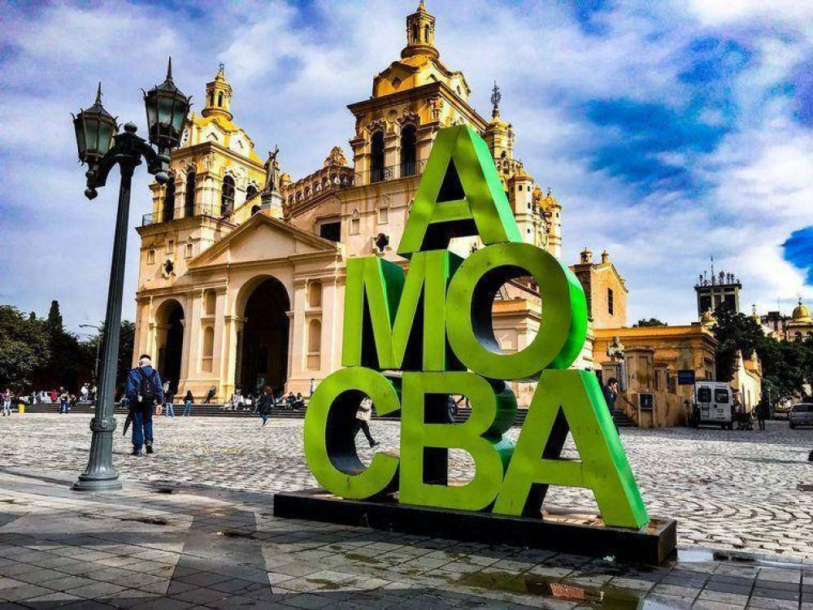

TURISMO EN CORDOBA
La Provincia de Córdoba es un destino ideal para experimentar las más
diversas
sensaciones que a un
viajero le puedan provocar placer. Con una indeleble impronta cultural e histórica, nuestro
territorio combina tradición, modernidad y una excepcional riqueza paisajística. Por la
variedad
de
destinos que propone su geografía, es un lugar donde el turista podrá disfrutar todo el año
propuestas siempre novedosas.
Existen varias opciones para disfrutar de la ciudad. Una de ellas es visitar sus museos
históricos,
religiosos, de ciencias naturales, antropología y demás, son espacios culturales
imperdibles.
Además, sus espacios verdes son los mejores escenarios para disfrutar en familia o con
amigos,
que
se complementan con los paseos de artesanos y sus diversos rincones gastronómicos para
degustar
sabores regionales.